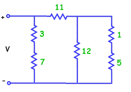
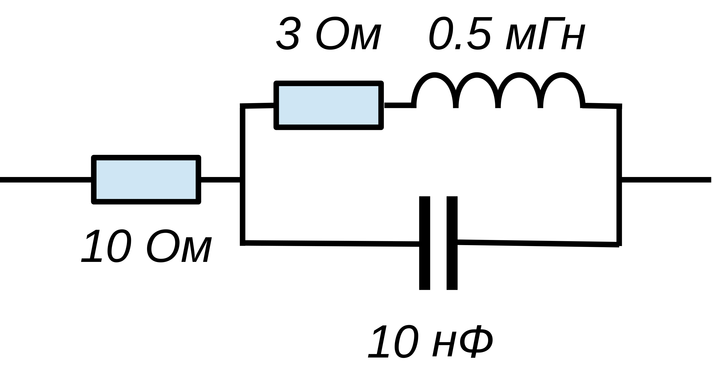

До сих пор мы не указывали типы у аргументов функций и возвращаемых ими значений. Но Haskell статически типизированный язык, а это значит, что все выражения в программе имеют определённый тип. Типы выводятся компилятором автоматически и это следствие чистоты языка.
:t :t 'a' :t "Hello" :t 56 :t [1..5] :t 2 < 3 :t (<) :t (==) :t sin :t map :t (+) :t (+ 2) :t id :t ($) :t (.) :t integrate :t (\x -> x) :t (\x y -> x) :t (\x y -> x + y)
:i :i Char :i String :i Bool :i Int :i []
Cм. Классы типов.
:i:i Show :i Eq :i Ord :i Num :i Floating
Несмотря на то, что компилятор хорошо справляется с выводом типов, указывать явно тип определяемой в программе функции полезно. Это, во-первых, хорошая документация к функции. Во вторых, при работе с полиморфными функциями и типами, иногда компилятору требуются некоторые подсказки.
Общий подход к решению реальных (и учебных) задач, предлагаемый функциональным программированием состоит в следующем:
Double) и допускает последовательное или параллельное соединение элементов цепи.data Circuit = R Double | Par Circuit Circuit | Seq Circuit Circuit deriving Show
Например:
R 20 -- сопротивление номиналом 20 Ом R 100 `Seq` R 10 -- последовательное соединение двух сопротивлений R 100 `Par` R 10 -- параллельное соединение двух сопротивлений

Цепь 1.
resistance, которая вычисляла бы суммарное сопротивление произвольной двухполюсной цепи. При этом используются следующие формулы: при последовательном подключении элементов складываются значения сопротивлений, а при параллельном подключении складываются проводимости:resistance :: Circuit -> Double
resistance сопротивление цепи 1.Circuit элемент, соответствующий ключу. При этом замкнутому состоянию ключа пусть соответствует нулевое, а разомкнутому — бесконечное сопротивление (его можно получить с помощью выражения 1/0). Поместите вместо элементов с номиналами 11 и 7 ключи, и вычислите сопротивление цепи, при различных сочетаниях их состояний.connect, которая бы возвращала ответ на вопрос: замкнута цепь или нет.Проверьте работу этой функции при различных сочетаниях состояний ключей.connect :: Circuit -> Bool
Использование бесконечного значения для представления разомкнутой цепи чревато неприятностями, не очень красиво и не позволит работать с произвольными (невещественными) числами. Правильным и идиоматичным функциональным путём будет определить отдельный тип, описывающий состояние цепи в электротехнических терминах.
Resistance, который может представлять разомкнутую цепь Break, цепь, замкнутую накоротко Short и цепь, обладающую конечным сопротивлением Value Double.Resistance определите операции параллельного (<||>) и последовательного (<&&>) соединения. И переопределите функцию(<||>),(<&&>) :: Resistance -> Resistance -> Resistance
resistance так, чтобы она возвращала тип Resistance. Напишите короткое определение функции connect, использующее результат функции resistance.При расчёте электрических цепей переменного тока роль сопротивления играет импеданс, который выражается комплексным числом. Для цепей переменного тока следует добавить реактивные элементы: ёмкости и индуктивности. Импеданс ёмкости
Data.Complex Параметризуйте типimport Data.Complex
Resistance так, чтобы кроме типа Double он мог содержать в себе произвольные типы. Добавьте в тип Circuit представление для ёмкости и индуктивности — типы C Double и L Double. Опишите с помощью этого типа цепь 2, показанную на рисунке:
Цепь 2.
resistance так, чтобы она могла обрабатывать ёмкости и индуктивности. Для постоянного тока конденсаторы соответствуют разрыву цепи, а катушки индуктивности — короткому замыканию. Вычислите активное сопротивление цепи 2.impedance, имеющей типи вычислите импеданс для цепи 2. В полученном комплексном числе действительная часть должна быть равна активному сопротивлению цепи, а мнимая — реактивному (волновому).impedance :: Circuit -> Float -> Resistance (Complex Double)
Мы построили тип, описывающий внутреннюю структуру результата — сопротивления. Это не просто число, оно может принимать различные по смыслу значения, которые по-разному комбинируются друг с другом. Если внимательно посмотреть на определения операторов (<||>) и (<&&>), то можно заметить их сходство с логическими операторами над булевыми значениями. Если исключить из рассмотрения величины Value, то получатся точные определения логических операций И и ИЛИ, где роль True и False играют Short и Break, соответственно. Такое совпадение структур позволяет использовать то, что мы знаем о логике. В частности, закон де Моргана.
Осталось определить понятие отрицания для сопротивления. Это проводимость, — величина, обратная сопротивлению. Ведь при параллельном соединении складываются именно проводимости, значит наша догадка верна!
inv, которая преобразовывала бы сопротивления в проводимости и обратно. С её помощью закона де Моргана, определите операцию (<||>) через (<&&>) и inv.которые преобразовывали бы значения двух типов, признанные нами подобными, друг в друга.resistanceToBool :: Resistance a -> Bool boolToResistance :: Bool -> Resistance a
Поиск резонанса, как и решение произвольного алгебраического уравнения, можно и нужно автоматизировать. Для этого стоит воспользоваться универсальным и надёжным методом деления отрезка пополам, или методом бисекции. Он состоит в следующем:
bisection p a b, которая методом деления отрезка пополам, находит точку на отрезке При этом, если на указанном отрезке искомой точки не обнаруживается, функция должна возвращать значениеbisection :: Eq a => (Double -> a) -> Double -> Double -> Maybe Double
Nothing. Относительная точность bisection (\x -> x < 2) 1 3 bisection (\x -> x < 2) 0 1 bisection (\x -> x^2 < 2) 1 2 (^2) <$> bisection (\x -> x^2 < 2) 1 2 bisection (\x -> cos x > 1 - 1/x) 0 2 bisection (\x -> 1/x > 0) -1 2 bisection (\x -> isNaN (sqrt (3 - x^2))) 0 2
и припишите к описанию типа{-# LANGUAGE DeriveFunctor #-}
Resistance указания для вывода экземпляров класса Eq и Functor: О функторах ми поговорим несколько позже, но уже сейчас будет понятно, как мы расширили функциональность типаderiving (Show, Eq, Functor)
Resistance — теперь для него определен оператор <$>, позволяющий изменять значение внутри типа:
(*2) <$> Value 5 Value 10 (*2) <$> Break Break
resonance, отыскивающую для цепи резонансную частоту в указанных пределах.resonance :: Circuit -> Double -> Double -> Maybe Double